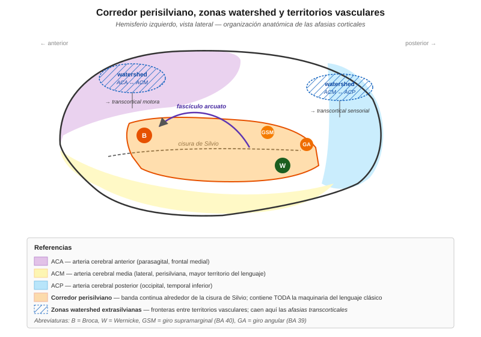
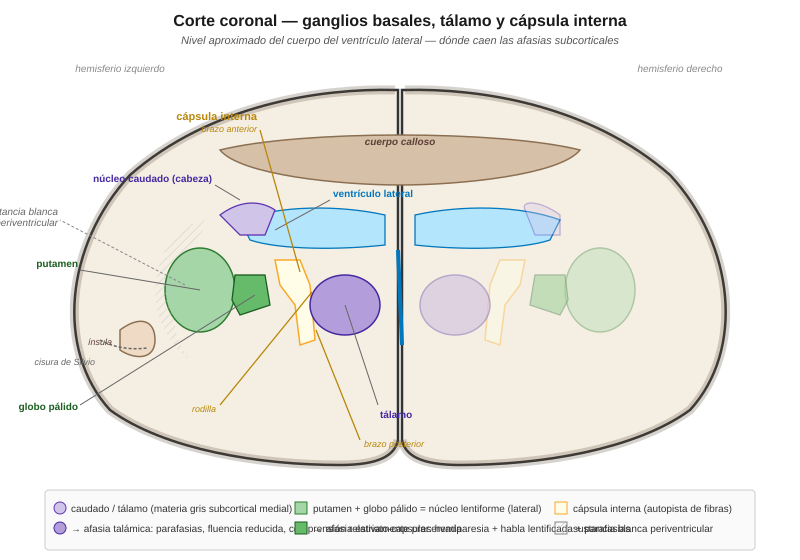

Anatomía del lenguaje — perisilviano, extrasilviano y subcortical¶
Los síndromes afásicos clásicos suelen presentarse uno por uno (Broca, Wernicke, conducción, transcorticales, etc.), pero desde el punto de vista anatómico todos se organizan en tres grandes grupos según dónde cae la lesión con respecto a la cisura de Silvio y a la sustancia gris cortical:
- Perisilvianas — lesión dentro del corredor perisilviano (Broca, Wernicke, conducción).
- Extrasilvianas / transcorticales — lesión afuera del corredor, en zonas watershed (transcortical motora, sensorial, mixta / aislamiento).
- Subcorticales — lesión bajo la corteza (afasia talámica, estriato-capsular, sustancia blanca periventricular).
Esta entrada da la vista anatómica integradora que ordena los síndromes ya vistos individualmente en la sección. Complementa las entradas de áreas de Broca y Wernicke, afasia de conducción y transcorticales.
Diagrama 1 — Corredor perisilviano, zonas watershed y territorios vasculares¶

El corredor perisilviano¶
Concepto anatómico¶
El corredor perisilviano (o cinturón perisilviano, perisylvian belt) es la banda continua de corteza que rodea la cisura de Silvio en el hemisferio izquierdo. No es una región discreta sino un circuito cortical continuo que forma la infraestructura del lenguaje.
Componentes desde anterior a posterior:
- Área de Broca (BA 44/45) — pared anterior del corredor, en la tercera circunvolución frontal.
- Corteza premotora ventral y opércular — continuación superior de Broca hacia el surco central.
- Giro supramarginal (GSM, BA 40) — pared parietal inferior anterior, arriba del extremo posterior de la cisura de Silvio.
- Giro angular (GA, BA 39) — pared parietal inferior posterior, en la unión temporo-parieto-occipital.
- Área de Wernicke (BA 22 posterior) — pared temporal superior posterior.
- Fascículo arcuato — subyace todo el corredor, conectando Broca con Wernicke arqueándose por sobre la cisura de Silvio.
Coincidencia con el territorio vascular de la ACM¶
Anatómicamente, el corredor perisilviano coincide casi punto por punto con el territorio irrigado por la arteria cerebral media (ACM) izquierda. Es por eso que los ACV isquémicos de ACM izquierda producen la enorme mayoría de las afasias que se ven en clínica.
- Rama superior de ACM (frontal + parietal opercular) → si se ocluye, típicamente afasia de Broca.
- Rama inferior de ACM (temporal superior + parietal inferior) → si se ocluye, típicamente afasia de Wernicke.
- Tronco de ACM (ambas ramas + subcortical) → afasia global.
- Ramas perforantes lenticuloestriadas (subcorticales, de ACM) → afasia estriato-capsular (ver más abajo).
Consecuencia clínica¶
Lesión dentro del corredor perisilviano ⇒ afasia con repetición alterada. Es un principio útil en cabecera de cama: si el paciente NO puede repetir, la lesión probablemente está dentro del corredor (Broca, Wernicke o conducción). Si SÍ puede repetir, la lesión probablemente está afuera (transcortical) o subcortical.
Las zonas watershed extrasilvianas¶
Concepto¶
Las zonas watershed (en español a veces zonas frontera, zonas limítrofes o zonas de riego marginal) son las regiones corticales situadas en los bordes entre dos territorios vasculares. Son las primeras en sufrir cuando hay hipoperfusión sistémica (paro cardíaco, hipotensión severa, estenosis carotídea crítica), porque están irrigadas por los extremos distales de dos árboles arteriales.
En el hemisferio izquierdo hay dos zonas watershed relevantes para el lenguaje:
1. Watershed anterior — ACA/ACM
Frontera entre el territorio de la arteria cerebral anterior (parasagital, frontal medial y superior) y la arteria cerebral media (lateral). Cae en la corteza frontal superior y prefrontal medial, justo por encima del área de Broca pero fuera del corredor perisilviano.
- Lesión aquí ⇒ afasia transcortical motora.
- Perfil: iniciación reducida, latencias largas, habla poco espontánea; repetición preservada; comprensión preservada.
2. Watershed posterior — ACM/ACP
Frontera entre ACM (perisilviana) y arteria cerebral posterior (occipital + temporal inferior). Cae en la corteza temporo-parieto-occipital posterior, detrás de Wernicke pero fuera del corredor.
- Lesión aquí ⇒ afasia transcortical sensorial.
- Perfil: comprensión alterada; repetición preservada (incluso obligatoria — ecolalia); habla fluente pero vacía.
3. Watershed doble — el síndrome de aislamiento
Cuando la hipoperfusión es severa y afecta ambas zonas watershed simultáneamente, queda una "isla" de corteza perisilviana funcionando aisladamente del resto del cerebro. Es el síndrome de aislamiento del área del lenguaje de Geschwind (1968), también llamado afasia transcortical mixta:
- Comprensión severamente alterada.
- Producción espontánea prácticamente ausente.
- Repetición ecolálica obligatoria — el paciente repite mecánicamente lo que oye.
- Etiología clásica: paro cardíaco prolongado, intoxicación por monóxido de carbono, hipotensión severa.
El principio unificador¶
Todas las afasias transcorticales comparten una firma: repetición preservada (incluso hipertrófica en la mixta). La razón anatómica es la misma: el corredor perisilviano está intacto — el "camino corto" Wernicke → arcuato → Broca funciona bien —, pero está desconectado del resto de la corteza asociativa. Por eso el paciente puede repetir mecánicamente pero no puede iniciar habla espontánea (motora) o entender qué está repitiendo (sensorial), o las dos cosas (mixta).
Diagrama 2 — Corte coronal: ganglios basales, tálamo y cápsula interna¶

Afasias subcorticales¶
Durante casi un siglo se creyó que solo las lesiones corticales producían afasia — dogma heredado de Broca y Wernicke. Con la llegada de la TAC y la RMN en los 70s-80s, empezaron a documentarse pacientes con afasia clara y lesiones exclusivamente subcorticales. El trabajo pionero fue Damasio et al. (1982) Archives of Neurology — describen pacientes con hematomas o infartos limitados a putamen, cápsula interna o tálamo, que presentan afasia sin lesión cortical visible.
Desde entonces se distinguen tres grandes cuadros subcorticales:
1. Afasia talámica¶
- Lesión: tálamo izquierdo, típicamente por ACV en ramas talamo-perforantes (de ACP) o hemorragia talámica.
- Perfil clínico:
- Fluencia reducida (paradojicamente, el paciente puede oscilar entre casi mutismo y logorrea).
- Parafasias verbales y semánticas.
- Comprensión relativamente preservada (en agudo puede estar alterada).
- Repetición preservada.
- Anomia frecuente.
- Fluctuación notable: el paciente puede rendir muy distinto de un momento a otro.
- Interpretación: el tálamo actúa como "activador" de la corteza del lenguaje. Sin su input, la corteza está intacta pero funciona con menos activación.
2. Afasia estriato-capsular¶
- Lesión: putamen + cápsula interna, típicamente por infartos de ramas lenticuloestriadas (de ACM) o hemorragia lenticular.
- Perfil clínico:
- Hemiparesia derecha casi siempre (por afectación de cápsula interna).
- Habla disártrica (motora) además de afásica.
- Fluencia reducida, habla lentificada.
- Parafasias fonémicas.
- Comprensión variable.
- Repetición variable.
- Debate: hay evidencia de que muchos casos "estriato-capsulares" tienen en realidad hipoperfusión cortical concomitante (por afectación de ramas de ACM que también irrigan corteza), y que la afasia "pura subcortical" es más rara de lo que se pensaba (Nadeau & Crosson 1997, revisión canónica del debate).
3. Afasia por sustancia blanca periventricular¶
- Lesión: sustancia blanca que rodea el ventrículo lateral, especialmente el asta anterior y el cuerpo. Puede afectar radiaciones que conectan la corteza con estructuras profundas y con el hemisferio opuesto (por corpus callosum).
- Frecuente en leucoaraiosis (patología microvascular difusa de sustancia blanca en el adulto mayor) y en algunas enfermedades desmielinizantes.
- Perfil clínico: cuadros heterogéneos, habitualmente con anomia predominante, disprosodia, y a veces transtornos ejecutivos más que puramente lingüísticos.
- Marca el borde entre afasia "focal" y deterioro cognitivo vascular.
El debate: ¿son verdaderas afasias subcorticales?¶
Nadeau & Crosson (1997) Brain and Language — revisión clásica. Argumento: muchas "afasias subcorticales" reportadas eran en realidad diasquisis cortical — el tejido subcortical dañado deja de estimular la corteza sobrelateral, que aparece hipofuncionante en PET/SPECT aunque estructuralmente esté intacta. La afasia sería entonces "cortical funcional" aunque la lesión anatómica sea subcortical.
Crosson (1985) propuso un modelo integrador: el tálamo, los ganglios basales y la corteza forman circuitos córtico-subcorticales en asa; una lesión en cualquier nodo produce disfunción del circuito completo. Es la visión actual dominante — no hay "lenguaje subcortical" separado del cortical, hay redes distribuidas que incluyen tanto corteza como subcortical.
Los tres grandes grupos anatómicos — tabla resumen¶
| Grupo | Ubicación | Vascularización típica | Repetición | Ejemplos clínicos |
|---|---|---|---|---|
| Perisilviano | Corteza dentro del corredor alrededor de la cisura de Silvio | ACM (ramas superior e inferior) | Alterada | Broca, Wernicke, conducción, global |
| Extrasilviano (transcortical) | Corteza en zonas watershed, afuera del corredor | Bordes ACA-ACM y ACM-ACP; hipoperfusión sistémica | Preservada (incluso ecolálica) | Transcortical motora, sensorial, mixta (aislamiento) |
| Subcortical | Ganglios basales, tálamo, cápsula interna, sustancia blanca periventricular | Ramas lenticuloestriadas (ACM), talamo-perforantes (ACP) | Variable | Talámica, estriato-capsular, leucoaraiosis |
Vascularización — el mapa clínico útil¶
Un principio: si sabés qué arteria se ocluyó, podés predecir el tipo de afasia probable (con cautelas).
Arteria cerebral media izquierda (ACM izq.) — la arteria del lenguaje por excelencia:
- Tronco de ACM → afasia global + hemiparesia derecha densa.
- Rama superior (frontal + parietal opercular) → afasia de Broca + hemiparesia braquiofacial.
- Rama inferior (temporal superior + parietal inferior) → afasia de Wernicke, sin hemiparesia significativa.
- Ramas perforantes lenticuloestriadas → afasia estriato-capsular + hemiparesia (por cápsula interna).
Arteria cerebral anterior izquierda (ACA izq.):
- Frontal medial y superior → afasia transcortical motora + apraxia + incontinencia.
Arteria cerebral posterior izquierda (ACP izq.):
- Occipital + temporal inferior → afasia transcortical sensorial (si watershed extenso), alexia sin agrafia (por lesión del esplenio del cuerpo calloso + corteza visual izq.), anomia de colores.
- Ramas talamo-perforantes → afasia talámica.
Hipoperfusión sistémica (no una arteria específica):
- Zonas watershed bilaterales → síndrome de aislamiento / afasia transcortical mixta.
Conexiones en este sitio¶
- Áreas de Broca y Wernicke y sus afasias clásicas — anatomía cortical detallada del corredor perisilviano anterior y posterior.
- Triángulo / casita de Wernicke-Lichtheim — cómo el modelo clásico predice los 7 síndromes desde los 3 centros del corredor.
- Afasia de conducción — el rasgo de repetición desproporcionadamente alterada como marca del corredor perisilviano lesionado en su vía dorsal (arcuato / GSM).
- Afasias transcorticales — las tres afasias con repetición preservada de las zonas watershed extrasilvianas.
- BADA — evaluación fina de los componentes que estas lesiones dañan selectivamente.
- Mecanismos de recuperación post-lesión — cómo se reorganiza la red del lenguaje después del daño.
Referencias clave¶
- Damasio, A. R., Damasio, H., Rizzo, M., Varney, N. & Gersh, F. (1982) "Aphasia with nonhemorrhagic lesions in the basal ganglia and internal capsule" Archives of Neurology 39:15-20. El paper que fundó el concepto de afasia subcortical.
- Crosson, B. (1985) "Subcortical functions in language: A working model" Brain and Language 25:257-292. Modelo integrador córtico-subcortical del lenguaje.
- Nadeau, S. E. & Crosson, B. (1997) "Subcortical aphasia" Brain and Language 58:355-402. Revisión canónica del debate sobre si las afasias subcorticales son "puras" o corticales por diasquisis.
- Catani, M., Jones, D. K. & ffytche, D. H. (2005) "Perisylvian language networks of the human brain" Annals of Neurology 57:8-16. Redefinición contemporánea del corredor perisilviano con DTI: rama directa + ramas indirectas del arcuato.
- Hickok, G. & Poeppel, D. (2007) "The cortical organization of speech processing" Nature Reviews Neuroscience 8:393-402. Modelo dual-stream con vía ventral (temporal, bilateral) y dorsal (perisilviana, izq.).
- Geschwind, N. (1968) "The isolation of the speech area" reprinted in Selected Papers on Language and the Brain (1974). Reidel. Descripción original del síndrome de aislamiento watershed doble.
- Alexander, M. P., Naeser, M. A. & Palumbo, C. L. (1987) "Correlations of subcortical CT lesion sites and aphasia profiles" Brain 110:961-991. Correlaciones anatómico-clínicas finas.
- Bogousslavsky, J. & Caplan, L. R. (eds.) (2001) Stroke Syndromes (2nd ed.). Cambridge UP. Referencia canónica de correlaciones vasculares-clínicas.
- Ardila, A. (2005) Las Afasias. Universidad de Guadalajara. Manual en español, con capítulo sobre afasias subcorticales. Libre en aphasia.org/libroespanol.php.
- Cuetos, F. (2012) Neurociencia del Lenguaje. Bases neurológicas e implicancias clínicas. Madrid: Panamericana.